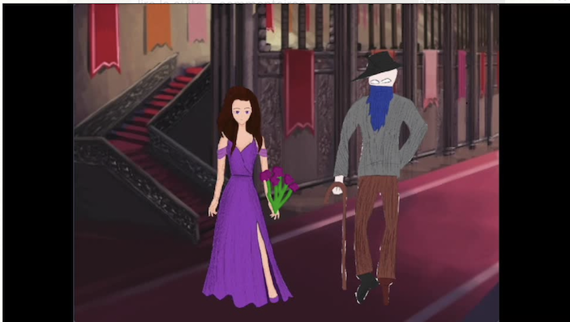
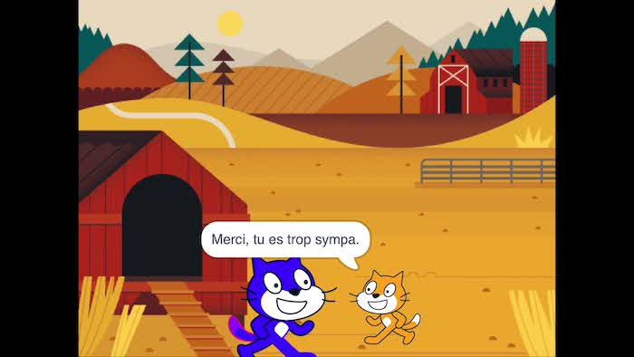
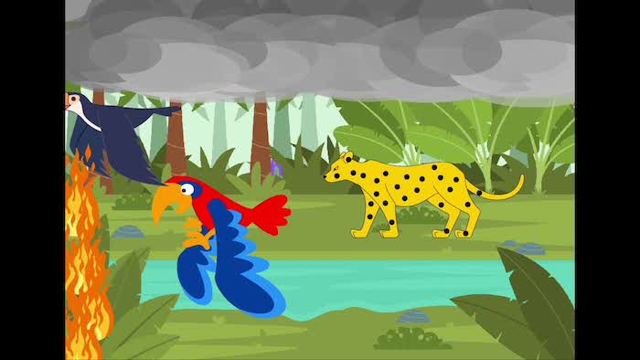

Après une initiation à la programmation par blocs en utilisant les parcours d'Algorea, cette activité permet de mobiliser les compétences acquises sur un projet en Scratch. Par classe, les élèves choisissent un conte et le racontent en créant un film d'animation. Cette activité a été réalisée par les classes de 9e sur 6 à 8 périodes.
Les scènes ont été réalisées par groupes dans Scratch, puis enregistrées et assemblées par les enseignant·es avec Quick Time Player et iMovie.
|
|
 |
| Classe 9VG2 | Classe 9VP2 |
|  |  |
| Classe 9VG1 | Classe 9VP1 |